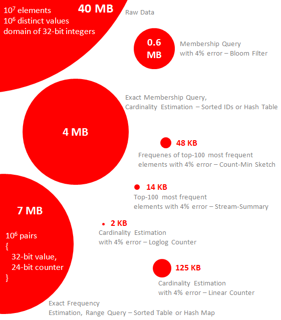
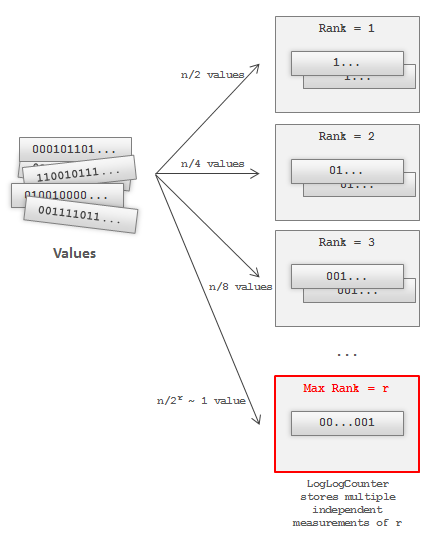
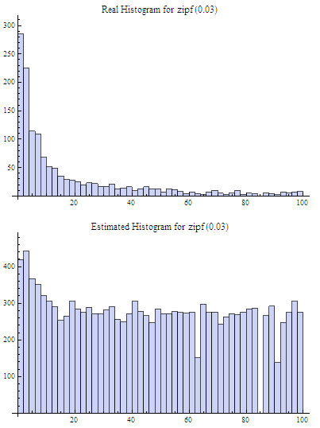
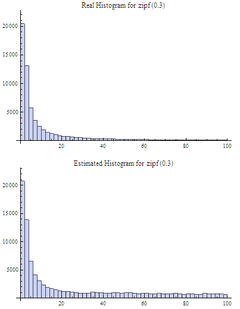

Streaming Data Analysis
Rob Doherty / @robdoherty2
Streaming Data Analysis
- Introduction to the problem domain
- A few key data structures
- Implementation Considerations
What is Stream Processing?
- Examples?
- Sensor data
- Image data
- Internet and Web traffic
Probabilistic Data Structures For Web Analytics And Data Mining
What is Stream Processing?
- Data arrives in a stream or streams, if not processed immediately or stored, it is lost
- Most data streaming algorithms summarize the stream in some way
- Most involve heavy use of hashing
- Many involve use of sketching
A few Probabilistic Data Structures
- Set Membership
Bloom Filter
- Cardinality Estimation
LogLog, HyperLogLog
- Frequency Estimation
Count Min Sketch, CountMean Min Sketch
- Heavy Hitters (Top-K)
Count Min Sketch, Stream Summary
Bloom Filter
- Used to test whether an element is a member of a set
- False positive matches are possible, but false negatives are not

Bloom Filter
- Algorithm
- Create empty Bloom filter is a bit array of $m$ bits, all set to $0$
- Define $k$ different hash functions
- To add an element, feed it to each of the $k$ hash functions to get $k$ array positions
- Set the bits at all these positions to 1
- To query, feed it to each of the k hash functions to get k array positions. If any of the bits at these positions is 0, the element is definitely not in the set
Bloom Filter
LogLog & HyperLogLog
- Hash each element in the data set and represent as a binary string
- Expect that about one half of strings will start with $1$, one quarter will start with $01$, and so on
- Denote the number of leading zeros as a rank
- If the maximum number of leading zeros observed is $n$, an estimate for the number of distinct elements in the set is $2^n$
LogLog & HyperLogLog
LogLog uses regular mean while HyperLogLog (HLL) uses harmonic mean to average the estimate cardinality calculated by different $m$ buckets
HLL is able to estimate cardinalities of $>10^9$ with a typical accuracy of 2%, using 1.5kB of memory
LogLog & HyperLogLog

Count Min Sketch
$$\epsilon \le \frac{2n}{w}$$
$$\delta = 1 - \left(\frac{1}{2}\right)^d$$

Count Min Sketch

Count Min Sketch

Stream Summary
-
input stream: {1,2,2,2,3,1,1,4}
Implementation Considerations
Important that $\alpha > 1$
Further Reading
- Probabilistic Data Structures for Web Analytics and Data Mining, Ilya Katsov
- Efficient Computation of Frequent and Top-K Elements in Data Streams, A. Metwally, D. Agrawal, A.E. Abbadi.
- HyperLogLog: the analysis of a near-optimal cardinality estimation algorithm, P. Flayjolet, E.Fusy, O. Gandouet, F. Meunier.
- An Improved Data Stream Summary: The Count-Min Sketch and its Applications, . Cormode, S. Muthukrishnan.
- A Statistical Analysis of Probabilistic Counting Algorithms, P. Clifford, I. Cosma.
- Mining Massive Data Sets, Chapter 4Leskovec, Rajaraman, Ullman
- Stream-lib: Java library with implementations of many of these algorithms